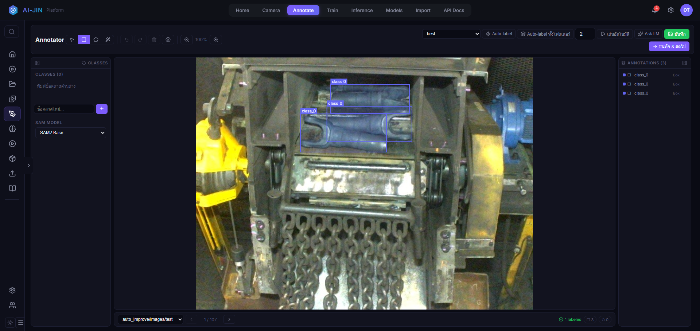
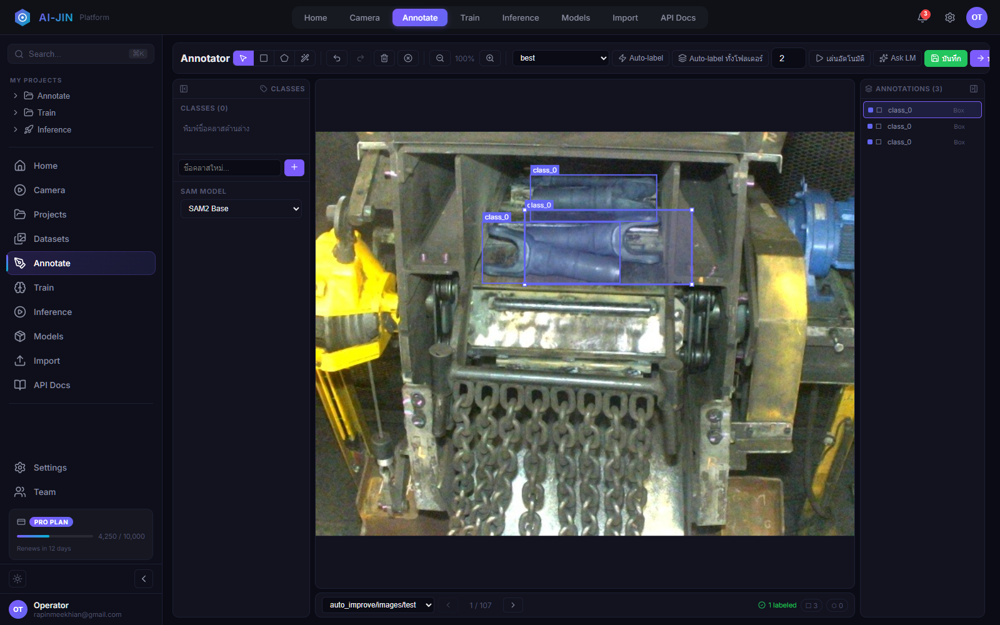
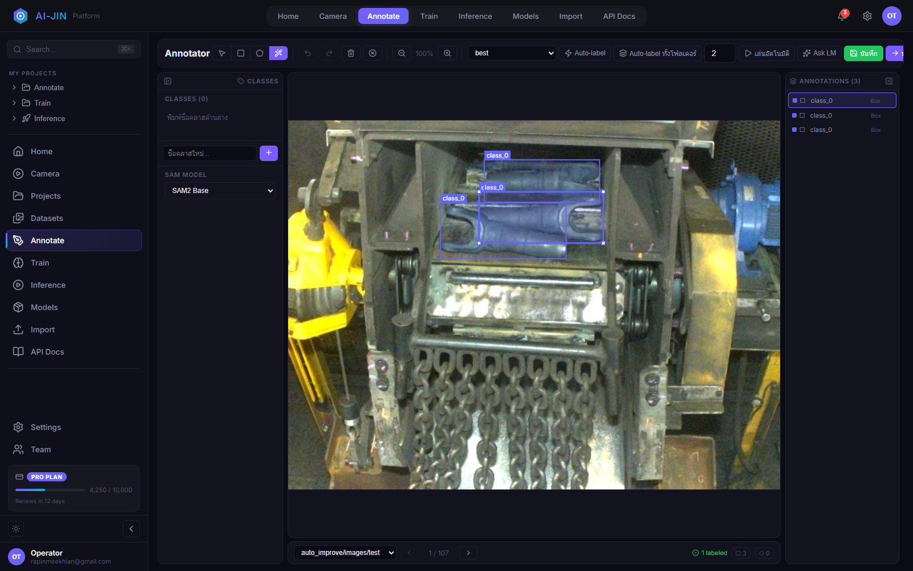
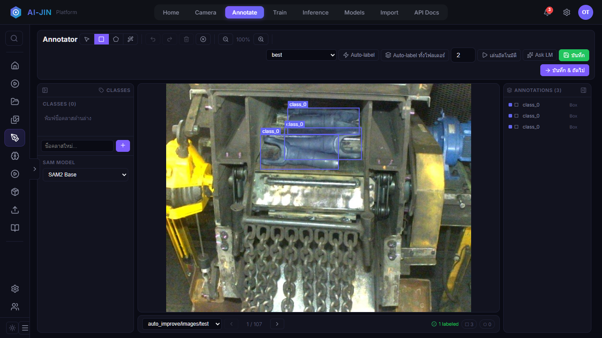

วาด ปรับขนาด ตรวจคุณภาพ และใช้ SAM ร่วมกับกรอบ เพื่อสร้างข้อมูล YOLO ที่พร้อมสำหรับการเทรน


เลือก Select (V) แล้วลากภายในกรอบ ขนาดเดิมจะคงอยู่และตำแหน่งถูกจำกัดในภาพ
ลากจุดจับสีขาว NW/NE/SW/SE ให้กรอบชิดขอบชิ้นงาน กรอบจะไม่ออกนอกภาพ
Ctrl+Z ย้อนหนึ่งครั้ง Ctrl+Y ทำซ้ำ Delete ลบกรอบที่เลือก

| คำสั่ง | การใช้งาน | สิ่งที่ต้องตรวจ |
|---|---|---|
| Auto-label | ใช้โมเดลกับภาพปัจจุบัน | กรอบซ้ำ, class, false positive/negative |
| Auto-label ทั้งโฟลเดอร์ | ประมวลผลหลายภาพ | สุ่มตรวจทุก workpiece และสภาพแสง |
| เล่นอัตโนมัติ | detect, รอ, บันทึก, ไปภาพถัดไป | ตั้งเวลารอให้ตรวจทัน |
| Ask LM | เสนอวัตถุที่ขาดหรือปรับกรอบ | LM Status และผลก่อนยืนยัน |
เขียน label ของภาพปัจจุบัน แล้วคงอยู่หน้าเดิมเพื่อ QA ซ้ำ
เขียน label แล้วเปิดภาพถัดไป เหมาะกับ workflow ต่อเนื่อง
labels/<split>/ชื่อเดียวกับภาพ.txt
Box: class cx cy width height Polygon: class x1 y1 x2 y2 ...
| อาการ | แนวทางแก้ |
|---|---|
| Save 500 | ตรวจ log, path และ permission ใต้ D:\Ai-JIN_Platform\dataset |
| Classes (0) แต่มี class_0 | สร้างชื่อคลาสจริงแล้วกำหนด annotation ใหม่ |
| SAM ไม่พบวัตถุ | เปลี่ยนจุด prompt/model หรือวาด Box เอง |
| ปรับกรอบผิด | กด Ctrl+Z ก่อนเปลี่ยนภาพ |

กดลูกศรกลางขอบซ้ายเพื่อย่อ sidebar จาก 260 px เหลือ 68 px ระบบจำสถานะหลัง Reload
Toolbar wrap อัตโนมัติ จอ 320-700 px เรียง Classes, Canvas และ Annotations ในแนวตั้งและเลื่อนได้